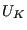
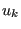
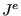
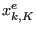

Next: Node Types
Up: CalculiX CrunchiX USER'S MANUAL
Previous: Mesh refinement of a
Contents
The finite element method is basically concerned with the determination of field variables. The most important ones are the stress and strain fields. As basic measure of strain in CalculiX the Lagrangian strain tensor E is used for elastic media, the Eulerian strain tensor e is used for deformation plasticity and the deviatoric elastic left Cauchy-Green tensor is used for incremental plasticity. The Lagrangian strain satisfies ([20]):
where  are the displacement components in the material frame of reference and repeated indices imply summation over the appropriate range. In a linear analysis, this reduces to the familiar form:
The Eulerian strain satisfies ([20]):
where  are the displacements components in the spatial frame of reference.
Finally, the deviatoric elastic left Cauchy-Green tensor is defined by ([71]):
where  is the elastic Jacobian and  is the elastic deformation gradient. The above formulas apply for Cartesian coordinate systems.
The stress measure consistent with the Lagrangian strain is the second Piola-Kirchhoff stress S. This stress, which is internally used in CalculiX for all applications (the so-called total Lagrangian approach, see [9]), can be transformed into the first Piola-Kirchhoff stress P (the so-called engineering stress, a non-symmetric tensor) and into the Cauchy stress t (true stress). All CalculiX input (e.g. distributed loading) and output is in terms of true stress. In a tensile test on a specimen with length L the three stress measures are related by:
where  is the engineering strain defined by
is the engineering strain defined by
Subsections
- Node Types
- Element Types
- Beam Section Types
- Fluid Section Types: Gases
- Orifice
- Bleed Tapping
- Preswirl Nozzle
- Straight and Stepped Labyrinth
- Characteristic
- Carbon Seal
- Gas Pipe (Fanno)
- Restrictor, Long Orifice
- Restrictor, Enlargement
- Restrictor, Contraction
- Restrictor, Bend
- Restrictor, Wall Orifice
- Restrictor, Entrance
- Restrictor, Exit
- Restrictor, User
- Branch, Joint
- Branch, Split
- Cross, Split
- Vortex
- Möhring
- Change absolute/relative system
- In/Out
- Mass Flow Percent
- Network User Element
- Fluid Section Types: Liquids
- Fluid Section Types: Open
Channels
- Boundary conditions
- Materials
- Types of analysis
- Convergence criteria
- Loading
- Error estimators
- Output variables
Next: Node Types
Up: CalculiX CrunchiX USER'S MANUAL
Previous: Mesh refinement of a
Contents
guido dhondt
2018-12-15